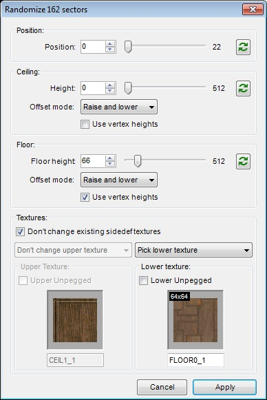
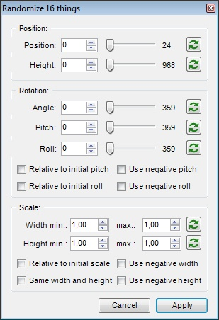

Jitter can be used to add some randomness to any kind of selection, which can be helpful when you are creating natural (caves) or distorted (CAVES IN HELL!!!) environments.
| Before: | After: |
This function can be applied to any kind of selection from both Classic and Visual modes.
Depending on selection type, different sets of settings can be used:
When vertices or linedefs are selected in Vertices or Linedefs mode, or only walls are selected in Visual mode, you'll get this:
When sectors are selected in Sectors mode, or floors/ceilings are selected in Visual mode, you'll get this:

When things are selected in Things or Visual mode, you'll get this:

You can use button to update random values for given property.
If you enable Relative option, property value will be calculated as a percentage of maximum possible value.